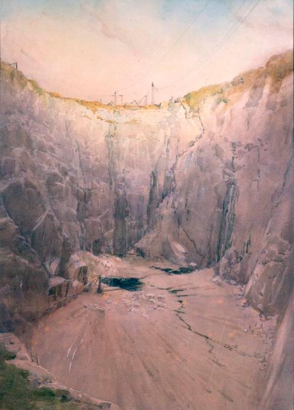
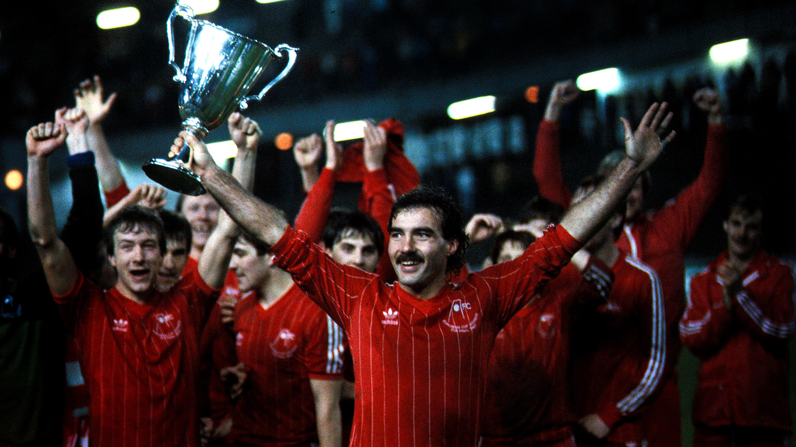

Due to the massive amount of granite that was present in the North East of Scotland, Aberdeen became the world trade hub for granite by the end of the 19th century. A vast quantity of granite was taken from the Rubislaw Quarry, which is one of the largest man made holes in Europe! (shown below).
Aberdeen FC has had it's fair share of success considering the size of the city. The crowning achievements being in 1983, winning the European Super Cup and the European Cup Winner's Cup with manager, Sir Alex Ferguson. On top of the European achievements, the club has won the league 4 times, Scottish Cup 7 times and the league cip 6 times.
To this day, Aberdeen still hold more European trophies than any other Scottish club. Represented by 2 stars placed above the club's badge on their kit.
Pittodrie stadium, the home of Aberdeen FC, was the first all-covered all-seater stadium in the UK and has a current capacity of 20,886. The record attendance at the stadium is 45,061 in a game against Hearts in 1954.